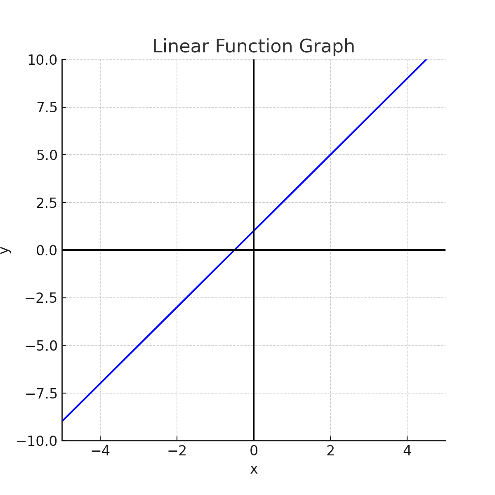

1. Which of the following statements is true regarding the function：y=kx+b in the graph? |
A
k is less than 0 and the value of k decreases B k is greater than 0 and the value of k decreases C k is less than 0 and the value of k increases D k is greater than 0 and the value of k increases |
2. If the equation of a line is y = 2x + 3, what is the y-intercept of the line? |
A
3 B 2 C 5 D 6 |
3.What is the expression for this function? |
A
y = 2x + 1 B y = -2x + 1 C y = 2x - 1 D y = -2x - 1 |